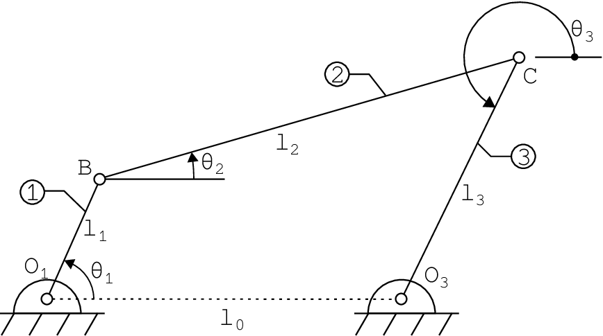
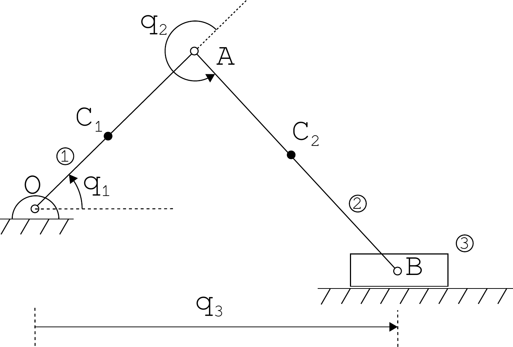

Position-Level Analysis
Kinematics and Machine Dynamics · Chapter 6
Chapter overview
- Forward and inverse kinematics
- Two-link planar arm: transformations and position
- Four-bar mechanism: two paths to the same point
- Offset slider-crank: closure and assembly branches
- Analytical inverse kinematics and numerical solution
Goal: write a consistent position model and determine which configurations actually exist.
Forward and inverse kinematics
Forward kinematics: given joint coordinates, compute the tool configuration.
q\longmapsto g_{0n}(q).
Inverse kinematics: given a desired configuration H, solve
g_{0n}(q)=H.
For a closed mechanism, both directions must also satisfy the loop constraints. Solutions may be absent, unique, or multiple.
Frames and notation
We retain Chapter 5’s convention:
p_i=R_{ij}p_j+p_{ij},\qquad g_{ij}=\begin{bmatrix}R_{ij}&p_{ij}\\0&1\end{bmatrix}.
- p_{ij} is expressed in frame i.
- A planar mechanism still fits within SE(3): all z coordinates are zero and rotations are about z.
- Use c_1=\cos\theta_1, s_1=\sin\theta_1.
- Use c_{12}=\cos(\theta_1+\theta_2), not c_1c_2.
Constructing a forward model
- Identify each rigid link, including the base.
- Attach a frame to a specified point on each link.
- Express adjacent-frame transformations.
- Compose transformations from base to tool.
- For a closed mechanism, equate alternative paths to the same point or frame.
Record angle reference directions before writing trigonometric equations.
The two-link planar arm

Compiled notes, Fig. 6.1.
a_1,a_2>0 are fixed link lengths.
\theta_1: first link relative to the base.
\theta_2: second link relative to the first.
The second link’s absolute orientation is \theta_1+\theta_2.
Frames 1 and 2 have origins at the elbow and tip.
First adjacent transformation
The elbow lies a_1 units along the first link’s x axis:
p_{01}=R_z(\theta_1)\begin{bmatrix}a_1\\0\\0\end{bmatrix} =\begin{bmatrix}a_1c_1\\a_1s_1\\0\end{bmatrix}.
g_{01}=\begin{bmatrix} c_1&-s_1&0&a_1c_1\\s_1&c_1&0&a_1s_1\\0&0&1&0\\0&0&0&1 \end{bmatrix}.
Both the rotation and translation are expressed consistently relative to frame 0.
Second adjacent transformation
The tip lies a_2 units along the second link’s x axis:
p_{12}=R_z(\theta_2)\begin{bmatrix}a_2\\0\\0\end{bmatrix} =\begin{bmatrix}a_2c_2\\a_2s_2\\0\end{bmatrix}.
g_{12}=\begin{bmatrix} c_2&-s_2&0&a_2c_2\\s_2&c_2&0&a_2s_2\\0&0&1&0\\0&0&0&1 \end{bmatrix}.
Here p_{12} is expressed in frame 1, not in the fixed frame.
Composing the arm transformations
g_{02}=g_{01}g_{12} =\begin{bmatrix} c_{12}&-s_{12}&0&a_1c_1+a_2c_{12}\\ s_{12}&c_{12}&0&a_1s_1+a_2s_{12}\\ 0&0&1&0\\0&0&0&1 \end{bmatrix}.
Thus the tool position and orientation are
\boxed{x=a_1c_1+a_2c_{12},\qquad y=a_1s_1+a_2s_{12},} \boxed{\phi=\theta_1+\theta_2.}
A two-joint arm cannot generally prescribe all three planar pose variables independently.
Worked example: arm position
Choose a_1=1 m, a_2=0.5 m, \theta_1=30^\circ, and \theta_2=60^\circ.
\phi=90^\circ, x=1\cos30^\circ+0.5\cos90^\circ=0.8660\ \mathrm m, y=1\sin30^\circ+0.5\sin90^\circ=1.0000\ \mathrm m.
The second link is vertical. Its contribution to x is zero and its contribution to y is 0.5 m.
The distance from the base to the tip is \sqrt{1.75}=1.3229 m.
The four-bar mechanism

Compiled notes, Fig. 6.2. The figure’s \theta_3 points from C to O_3.
Use absolute angles from +x:
- \alpha: O_1\to B
- \beta: B\to C
- \gamma: O_3\to C
Thus \gamma=\theta_3+\pi relative to the figure’s reversed output axis.
The textbook’s relative coupler angle satisfies \beta=\theta_1+\theta_2.
Two paths to the coupler joint
Set O_1=(0,0) and O_3=(l_0,0).
Along the left chain,
C=\begin{bmatrix}l_1\cos\alpha+l_2\cos\beta\\ l_1\sin\alpha+l_2\sin\beta\end{bmatrix}.
Along the right chain,
C=\begin{bmatrix}l_0+l_3\cos\gamma\\l_3\sin\gamma\end{bmatrix}.
Both expressions locate the same physical point in the same frame.
Four-bar closure equations
Equating the two paths gives
\boxed{F(\beta,\gamma;\alpha)= \begin{bmatrix} l_1\cos\alpha+l_2\cos\beta-l_0-l_3\cos\gamma\\ l_1\sin\alpha+l_2\sin\beta-l_3\sin\gamma \end{bmatrix}=0.}
Given \alpha, solve for the two unknown angles \beta,\gamma.
Then compute C using either path. The residual difference between the paths is a direct consistency check.
Assembly modes and feasibility
Once \alpha is fixed, B is known. Point C must lie on:
- the circle centered at B with radius l_2;
- the circle centered at O_3 with radius l_3.
Let d=\|O_3-B\|. A configuration exists only when
|l_2-l_3|\le d\le l_2+l_3.
Typically there are two intersections, hence two assembly modes. Tangency gives a limiting configuration; coincident circles are a special degenerate case.
Worked example: four-bar closure
Use l_0=2, l_1=1, l_2=2, l_3=1 m and \alpha=60^\circ.
One assembly mode has \beta=0 and \gamma=60^\circ:
C_{\rm left}=\begin{bmatrix}1\cos60^\circ+2\\1\sin60^\circ\end{bmatrix} =\begin{bmatrix}2.5\\0.8660\end{bmatrix}\ \mathrm m,
C_{\rm right}=\begin{bmatrix}2+1\cos60^\circ\\1\sin60^\circ\end{bmatrix} =\begin{bmatrix}2.5\\0.8660\end{bmatrix}\ \mathrm m.
The residual is zero. This verifies one configuration, not uniqueness.
Newton iteration for a closed mechanism
Let z=(\beta,\gamma)^\mathsf{T}. Linearize around the current guess z_k:
F(z_k+\Delta z)\approx F(z_k)+J_F(z_k)\Delta z.
Solve the linear system and update:
\boxed{J_F(z_k)\Delta z=-F(z_k),\qquad z_{k+1}=z_k+\Delta z.}
For the four-bar,
J_F=\begin{bmatrix}-l_2\sin\beta&l_3\sin\gamma\\ l_2\cos\beta&-l_3\cos\gamma\end{bmatrix}.
Convergence and branch tracking
- Supply an initial guess near the desired assembly mode.
- Use radians in the residual and Jacobian.
- Check both the residual norm and the step size; impose an iteration limit.
- For a sequence of input angles, start from the previous converged configuration.
\det J_F=l_2l_3\sin(\beta-\gamma).
When the coupler and output link become collinear, the position solve is singular. A small step or a solver success flag alone does not establish a valid configuration.
The offset slider-crank

Compiled notes, Fig. 6.3. Slider height is -a_0 relative to O.
- Crank length: a_1
- Connecting-rod length: a_2
- Fixed offset: a_0
- Input angle: q_1
- Relative rod angle: q_2
- Slider position: q_3
Let \psi=q_1+q_2 be the rod’s absolute angle.
Slider-crank closure
Along the two rotating links,
B=\begin{bmatrix}a_1\cos q_1+a_2\cos\psi\\ a_1\sin q_1+a_2\sin\psi\end{bmatrix}.
The slider guide requires B=(q_3,-a_0)^\mathsf{T}, so
\boxed{\begin{aligned} a_1\cos q_1+a_2\cos\psi-q_3&=0,\\ a_1\sin q_1+a_2\sin\psi+a_0&=0. \end{aligned}}
The horizontal equation contains -q_3 for a coordinate increasing to the right.
Slider position and branch selection
Define h=-a_0-a_1\sin q_1. Then a_2\sin\psi=h and
\boxed{q_3=a_1\cos q_1\ \pm\sqrt{a_2^2-h^2}.}
- A real solution requires |h|\le a_2.
- Choose the sign according to the physical assembly.
- Recover the rod angle with
\psi=\operatorname{atan2}(h,q_3-a_1\cos q_1),\qquad q_2=\psi-q_1.
The plus branch places the slider to the right of the crank pin.
Worked example: offset slider-crank
Let a_1=0.1 m, a_2=0.3 m, a_0=0.05 m, and q_1=30^\circ.
h=-0.05-0.1\sin30^\circ=-0.1\ \mathrm m.
For the right-hand assembly,
q_3=0.1\cos30^\circ+\sqrt{0.3^2-0.1^2}=0.36945\ \mathrm m, \psi=\operatorname{atan2}(-0.1,0.28284)=-19.471^\circ, q_2=\psi-q_1=-49.471^\circ.
The vertical check is 0.1\sin30^\circ+0.3\sin\psi=-0.05 m.
Inverse kinematics of the two-link arm
For a desired tip position (x,y), expand x^2+y^2:
x^2+y^2=a_1^2+a_2^2+2a_1a_2\cos\theta_2.
Define
D=\frac{x^2+y^2-a_1^2-a_2^2}{2a_1a_2}.
Then
\boxed{\theta_2=\operatorname{atan2}\!\left(\pm\sqrt{1-D^2},D\right).}
The two signs correspond to two elbow configurations when |D|<1.
Recovering the shoulder angle
Rewrite the position as a rotated vector:
\begin{bmatrix}x\\y\end{bmatrix} =\begin{bmatrix}\cos\theta_1&-\sin\theta_1\\ \sin\theta_1&\cos\theta_1\end{bmatrix} \begin{bmatrix}a_1+a_2\cos\theta_2\\a_2\sin\theta_2\end{bmatrix}.
Therefore,
\boxed{\theta_1=\operatorname{atan2}(y,x) -\operatorname{atan2}(a_2\sin\theta_2,a_1+a_2\cos\theta_2).}
Evaluate this expression separately for each elbow branch, then verify with forward kinematics.
Reachability and pose constraints
The two-link arm can reach a position only if
\boxed{|a_1-a_2|\le\sqrt{x^2+y^2}\le a_1+a_2.}
- If |D|>1, the position is unreachable.
- At D=\pm1, the usual two branches merge into a collinear configuration.
- If a_1=a_2 and (x,y)=(0,0), the shoulder angle is undetermined with a folded elbow.
A specified tool orientation must also satisfy \phi=\theta_1+\theta_2. Position solutions need not satisfy an independently prescribed orientation.
Worked example: two inverse solutions
Let a_1=a_2=1 m and (x,y)=(1,1) m.
D=0,\qquad \theta_2=\pm90^\circ.
| Elbow angle | Shoulder angle | Tool orientation |
|---|---|---|
| \theta_2=90^\circ | \theta_1=0^\circ | \phi=90^\circ |
| \theta_2=-90^\circ | \theta_1=90^\circ | \phi=0^\circ |
Both give the same tip position. If the desired orientation is 90^\circ, only the first satisfies the full pose.
Inverse kinematics of the four-bar
Given C=(x,y), the output-link circle imposes
(x-l_0)^2+y^2=l_3^2.
Solve the left two-link chain with lengths l_1,l_2:
D=\frac{x^2+y^2-l_1^2-l_2^2}{2l_1l_2},\qquad \delta=\operatorname{atan2}(\pm\sqrt{1-D^2},D), \alpha=\operatorname{atan2}(y,x)-\operatorname{atan2}(l_2\sin\delta,l_1+l_2\cos\delta), \beta=\alpha+\delta,\qquad \gamma=\operatorname{atan2}(y,x-l_0).
Reject candidates violating either reachability or the right-hand circle constraint.
Inverse kinematics of the slider-crank
Given a slider location q_3, the target for the two-link chain is (q_3,-a_0).
D=\frac{q_3^2+a_0^2-a_1^2-a_2^2}{2a_1a_2}, q_2=\operatorname{atan2}(\pm\sqrt{1-D^2},D), q_1=\operatorname{atan2}(-a_0,q_3) -\operatorname{atan2}(a_2\sin q_2,a_1+a_2\cos q_2).
The physical assembly, travel limits, and joint limits select admissible solutions. Substitute the result into both closure equations.
Position-analysis workflow
- Define frames, angle directions, lengths, and the desired output.
- Derive the transformations or vector loops.
- Solve for all relevant branches.
- Apply reachability, assembly, and joint-limit constraints.
- Substitute the solution into the original equations.
A position model is also the starting point for velocity and acceleration analysis: differentiate its constraints without changing conventions.
References and next chapter
Primary reading: compiled notes, Chapter 6, pp. 35–42.
Supporting material: original Lecture 03; Appendix C for nonlinear equations and Newton iteration.
The compiled chapter cites Kane and Levinson, Dynamics: Theory and Applications (1985). Its rigid-transform conventions also continue the material of Chapter 5.
Next: Chapter 7 — Velocity- and Acceleration-Level Analysis.

← Course Home · Kinematics and Machine Dynamics · Chapter 6